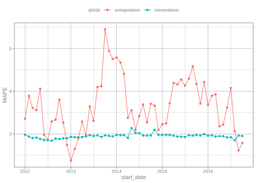

Modeling time series with tidy resampling
Calculate performance estimates for time series forecasts using resampling.
Introduction
To use code in this article, you will need to install the following packages: forecast, sweep, tidymodels, timetk, and zoo.
“Demo Week: Tidy Forecasting with sweep” is an excellent article that uses tidy methods with time series. This article uses their analysis with rsample to find performance estimates for future observations using rolling forecast origin resampling.
Example data
The data for this article are sales of alcoholic beverages originally from the Federal Reserve Bank of St. Louis website.
Each row represents one month of sales (in millions of US dollars).
Time series resampling
Suppose that we need predictions for one year ahead and our model should use the most recent data from the last 20 years. To set up this resampling scheme:
roll_rs <- rolling_origin(
drinks,
initial = 12 * 20,
assess = 12,
cumulative = FALSE
)
nrow(roll_rs)
#> [1] 58
roll_rs
#> # Rolling origin forecast resampling
#> # A tibble: 58 × 2
#> splits id
#> <list> <chr>
#> 1 <split [240/12]> Slice01
#> 2 <split [240/12]> Slice02
#> 3 <split [240/12]> Slice03
#> 4 <split [240/12]> Slice04
#> 5 <split [240/12]> Slice05
#> 6 <split [240/12]> Slice06
#> 7 <split [240/12]> Slice07
#> 8 <split [240/12]> Slice08
#> 9 <split [240/12]> Slice09
#> 10 <split [240/12]> Slice10
#> # ℹ 48 more rowsEach split element contains the information about that resample:
roll_rs$splits[[1]]
#> <Analysis/Assess/Total>
#> <240/12/309>For plotting, let’s index each split by the first day of the assessment set:
get_date <- function(x) {
min(assessment(x)$date)
}
start_date <- map(roll_rs$splits, get_date)
roll_rs$start_date <- do.call("c", start_date)
head(roll_rs$start_date)
#> [1] "2012-01-01" "2012-02-01" "2012-03-01" "2012-04-01" "2012-05-01"
#> [6] "2012-06-01"This resampling scheme has 58 splits of the data so that there will be 58 ARIMA models that are fit. To create the models, we use the auto.arima() function from the forecast package. The rsample functions analysis() and assessment() return a data frame, so another step converts the data to a ts object called mod_dat using a function in the timetk package.
library(forecast) # for `auto.arima`
library(timetk) # for `tk_ts`
library(zoo) # for `as.yearmon`
fit_model <- function(x, ...) {
# suggested by Matt Dancho:
x %>%
analysis() %>%
# Since the first day changes over resamples, adjust it
# based on the first date value in the data frame
tk_ts(start = .$date[[1]] %>% as.yearmon(),
frequency = 12,
silent = TRUE) %>%
auto.arima(...)
}Save each model in a new column:
roll_rs$arima <- map(roll_rs$splits, fit_model)
# For example:
roll_rs$arima[[1]]
#> Series: .
#> ARIMA(4,1,1)(0,1,2)[12]
#>
#> Coefficients:
#> ar1 ar2 ar3 ar4 ma1 sma1 sma2
#> -0.1852 -0.0238 0.3577 -0.1517 -0.8311 -0.193 -0.3244
#> s.e. 0.1466 0.1656 0.1440 0.0809 0.1377 0.067 0.0640
#>
#> sigma^2 = 72198: log likelihood = -1591.15
#> AIC=3198.3 AICc=3198.97 BIC=3225.7(There are some warnings produced by these regarding extra columns in the data that can be ignored.)
Model performance
Using the model fits, let’s measure performance in two ways:
- Interpolation error will measure how well the model fits to the data that were used to create the model. This is most likely optimistic since no holdout method is used.
- Extrapolation or forecast error evaluates the performance of the model on the data from the following year (that were not used in the model fit).
In each case, the mean absolute percent error (MAPE) is the statistic used to characterize the model fits. The interpolation error can be computed from the Arima object. To make things easy, let’s use the sweep package’s sw_glance() function:
For the extrapolation error, the model and split objects are required. Using these:
get_extrap <- function(split, mod) {
n <- nrow(assessment(split))
# Get assessment data
pred_dat <- assessment(split) %>%
mutate(
pred = as.vector(forecast(mod, h = n)$mean),
pct_error = ( S4248SM144NCEN - pred ) / S4248SM144NCEN * 100
)
mean(abs(pred_dat$pct_error))
}
roll_rs$extrapolation <-
map2_dbl(roll_rs$splits, roll_rs$arima, get_extrap)
summary(roll_rs$extrapolation)
#> Min. 1st Qu. Median Mean 3rd Qu. Max.
#> 2.371 3.231 3.629 3.654 4.113 5.453What do these error estimates look like over time?
roll_rs %>%
select(interpolation, extrapolation, start_date) %>%
pivot_longer(cols = matches("ation"), names_to = "error", values_to = "MAPE") %>%
ggplot(aes(x = start_date, y = MAPE, col = error)) +
geom_point() +
geom_line()
It is likely that the interpolation error is an underestimate to some degree, as mentioned above.
It is also worth noting that rolling_origin() can be used over calendar periods, rather than just over a fixed window size. This is especially useful for irregular series where a fixed window size might not make sense because of missing data points, or because of calendar features like different months having a different number of days.
The example below demonstrates this idea by splitting drinks into a nested set of 26 years, and rolling over years rather than months. Note that the end result accomplishes a different task than the original example; in this new case, each slice moves forward an entire year, rather than just one month.
# The idea is to nest by the period to roll over,
# which in this case is the year.
roll_rs_annual <- drinks %>%
mutate(year = as.POSIXlt(date)$year + 1900) %>%
nest(data = c(date, S4248SM144NCEN)) %>%
rolling_origin(
initial = 20,
assess = 1,
cumulative = FALSE
)
analysis(roll_rs_annual$splits[[1]])
#> # A tibble: 20 × 2
#> year data
#> <dbl> <list>
#> 1 1992 <tibble [12 × 2]>
#> 2 1993 <tibble [12 × 2]>
#> 3 1994 <tibble [12 × 2]>
#> 4 1995 <tibble [12 × 2]>
#> 5 1996 <tibble [12 × 2]>
#> 6 1997 <tibble [12 × 2]>
#> 7 1998 <tibble [12 × 2]>
#> 8 1999 <tibble [12 × 2]>
#> 9 2000 <tibble [12 × 2]>
#> 10 2001 <tibble [12 × 2]>
#> 11 2002 <tibble [12 × 2]>
#> 12 2003 <tibble [12 × 2]>
#> 13 2004 <tibble [12 × 2]>
#> 14 2005 <tibble [12 × 2]>
#> 15 2006 <tibble [12 × 2]>
#> 16 2007 <tibble [12 × 2]>
#> 17 2008 <tibble [12 × 2]>
#> 18 2009 <tibble [12 × 2]>
#> 19 2010 <tibble [12 × 2]>
#> 20 2011 <tibble [12 × 2]>The workflow to access these calendar slices is to use bind_rows() to join each analysis set together.
mutate(
roll_rs_annual,
extracted_slice = map(splits, ~ bind_rows(analysis(.x)$data))
)
#> # Rolling origin forecast resampling
#> # A tibble: 6 × 3
#> splits id extracted_slice
#> <list> <chr> <list>
#> 1 <split [20/1]> Slice1 <tibble [240 × 2]>
#> 2 <split [20/1]> Slice2 <tibble [240 × 2]>
#> 3 <split [20/1]> Slice3 <tibble [240 × 2]>
#> 4 <split [20/1]> Slice4 <tibble [240 × 2]>
#> 5 <split [20/1]> Slice5 <tibble [240 × 2]>
#> 6 <split [20/1]> Slice6 <tibble [240 × 2]>Session information
#> ─ Session info ─────────────────────────────────────────────────────
#> version R version 4.5.3 (2026-03-11)
#> language (EN)
#> date 2026-04-25
#> pandoc 3.1.3
#> quarto 1.9.37
#>
#> ─ Packages ─────────────────────────────────────────────────────────
#> package version date (UTC)
#> broom 1.0.12 2026-01-27
#> dials 1.4.3 2026-04-11
#> dplyr 1.2.1 2026-04-03
#> forecast 9.0.2 2026-03-18
#> ggplot2 4.0.3 2026-04-22
#> infer 1.1.0 2025-12-18
#> parsnip 1.5.0 2026-04-09
#> purrr 1.2.2 2026-04-10
#> recipes 1.3.2 2026-04-02
#> rlang 1.2.0 2026-04-06
#> rsample 1.3.2 2026-01-30
#> sweep 0.2.7 2026-03-17
#> tibble 3.3.1 2026-01-11
#> tidymodels 1.5.0 2026-04-23
#> timetk 2.9.1 2025-08-29
#> tune 2.1.0 2026-04-17
#> workflows 1.3.0 2025-08-27
#> yardstick 1.4.0 2026-04-07
#> zoo 1.8-15 2025-12-15
#>
#> ────────────────────────────────────────────────────────────────────